library(tidymodels)
library(palmerpenguins)
library(rpart)
library(skimr)
library(rpart.plot)
library(GGally)9 Decision Trees and Random Forests
9.1 Classification and Regression Trees
9.1.1 Construct a decision tree using R
9.1.2 Packages
9.1.3 Data
data(penguins)
skim(penguins)| Name | penguins |
| Number of rows | 344 |
| Number of columns | 8 |
| _______________________ | |
| Column type frequency: | |
| factor | 3 |
| numeric | 5 |
| ________________________ | |
| Group variables | None |
Variable type: factor
| skim_variable | n_missing | complete_rate | ordered | n_unique | top_counts |
|---|---|---|---|---|---|
| species | 0 | 1.00 | FALSE | 3 | Ade: 152, Gen: 124, Chi: 68 |
| island | 0 | 1.00 | FALSE | 3 | Bis: 168, Dre: 124, Tor: 52 |
| sex | 11 | 0.97 | FALSE | 2 | mal: 168, fem: 165 |
Variable type: numeric
| skim_variable | n_missing | complete_rate | mean | sd | p0 | p25 | p50 | p75 | p100 | hist |
|---|---|---|---|---|---|---|---|---|---|---|
| bill_length_mm | 2 | 0.99 | 43.92 | 5.46 | 32.1 | 39.23 | 44.45 | 48.5 | 59.6 | ▃▇▇▆▁ |
| bill_depth_mm | 2 | 0.99 | 17.15 | 1.97 | 13.1 | 15.60 | 17.30 | 18.7 | 21.5 | ▅▅▇▇▂ |
| flipper_length_mm | 2 | 0.99 | 200.92 | 14.06 | 172.0 | 190.00 | 197.00 | 213.0 | 231.0 | ▂▇▃▅▂ |
| body_mass_g | 2 | 0.99 | 4201.75 | 801.95 | 2700.0 | 3550.00 | 4050.00 | 4750.0 | 6300.0 | ▃▇▆▃▂ |
| year | 0 | 1.00 | 2008.03 | 0.82 | 2007.0 | 2007.00 | 2008.00 | 2009.0 | 2009.0 | ▇▁▇▁▇ |
9.1.4 Exploratory Data Analysis
Your turn: Perform an exploratory data analysis
What are the limitations of the following chart? Could you suggest ways to reduce clutter and enhance its clarity?
ggpairs(penguins, aes(colour = species), progress = FALSE) +
theme_bw()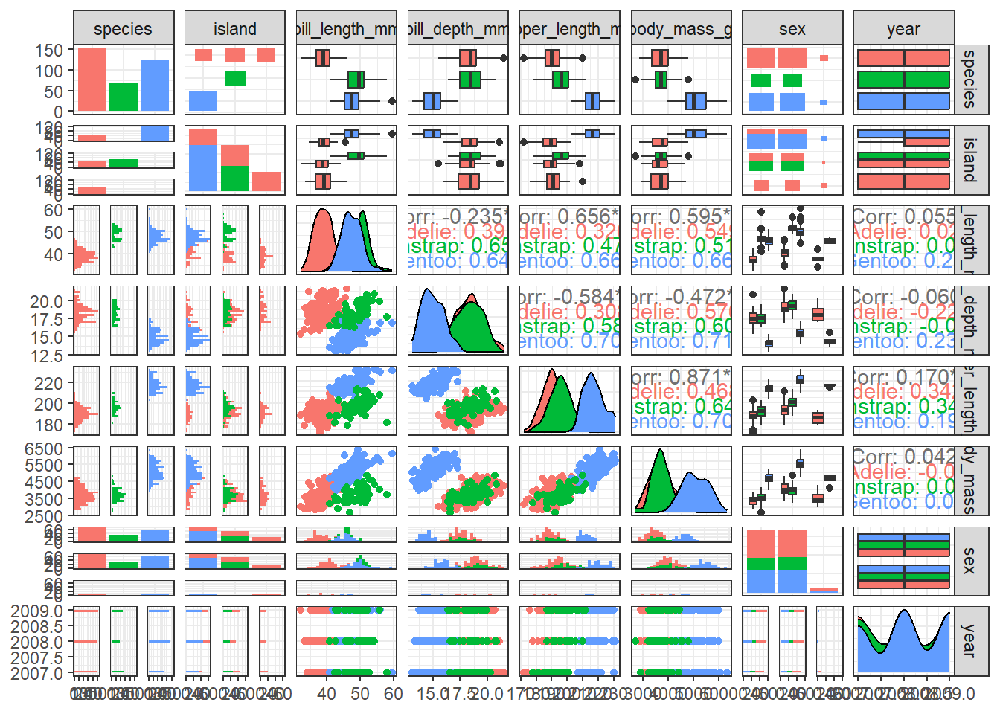
9.1.5 Remove missing values
penguins <- drop_na(penguins)9.1.6 Split data
library(rsample)
set.seed(123)
penguin_split <- initial_split(penguins, strata = species)
penguin_train <- training(penguin_split)
penguin_test <- testing(penguin_split)9.1.7 Display the dimensions of the training dataset
dim(penguin_test)[1] 84 8dim(penguin_train)[1] 249 89.1.8 Build Decision Tree
tree1 <- rpart(species ~ ., penguin_train, cp = 0.1)
rpart.plot(tree1, box.palette="RdBu", shadow.col="gray", nn=TRUE)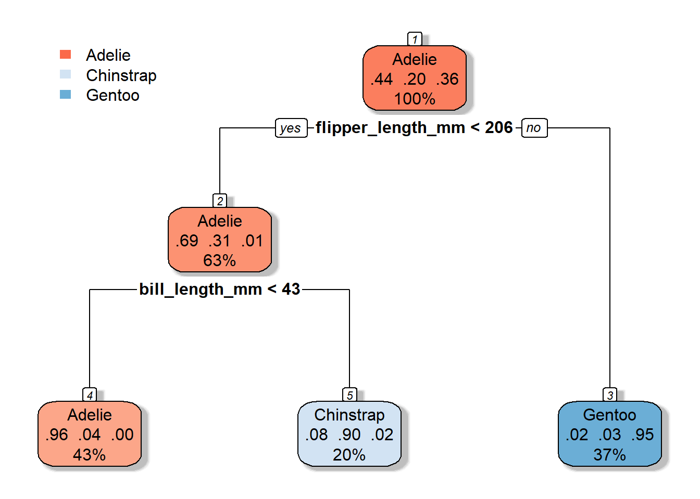
9.1.9 Make predictions
head(predict(tree1, penguin_test)) Adelie Chinstrap Gentoo
1 0.9626168 0.03738318 0
2 0.9626168 0.03738318 0
3 0.9626168 0.03738318 0
4 0.9626168 0.03738318 0
5 0.9626168 0.03738318 0
6 0.9626168 0.03738318 0head(predict(tree1, penguin_test, type = "class")) 1 2 3 4 5 6
Adelie Adelie Adelie Adelie Adelie Adelie
Levels: Adelie Chinstrap Gentoo9.1.10 Evaluate accuracy over the test set
library(caret)Loading required package: lattice
Attaching package: 'caret'The following objects are masked from 'package:yardstick':
precision, recall, sensitivity, specificityThe following object is masked from 'package:purrr':
liftpenguin_test$predict <- predict(tree1, penguin_test, type = "class")
confusionMatrix(data = penguin_test$predict,
reference = penguin_test$species)Confusion Matrix and Statistics
Reference
Prediction Adelie Chinstrap Gentoo
Adelie 35 0 0
Chinstrap 2 14 0
Gentoo 0 3 30
Overall Statistics
Accuracy : 0.9405
95% CI : (0.8665, 0.9804)
No Information Rate : 0.4405
P-Value [Acc > NIR] : < 2.2e-16
Kappa : 0.9066
Mcnemar's Test P-Value : NA
Statistics by Class:
Class: Adelie Class: Chinstrap Class: Gentoo
Sensitivity 0.9459 0.8235 1.0000
Specificity 1.0000 0.9701 0.9444
Pos Pred Value 1.0000 0.8750 0.9091
Neg Pred Value 0.9592 0.9559 1.0000
Prevalence 0.4405 0.2024 0.3571
Detection Rate 0.4167 0.1667 0.3571
Detection Prevalence 0.4167 0.1905 0.3929
Balanced Accuracy 0.9730 0.8968 0.97229.2 Random forests
Bagging ensemble method
Gives final prediction by aggregating the predictions of bootstrapped decision tree samples.
Trees in a random forest are independent of each other.
With ensemble methods, we get a new metric for assessing the predictive performance of the model, the out-of-bag error
9.3 Illustration of how random forests algorithm works
9.3.1 Boostrap Sample for the first tree
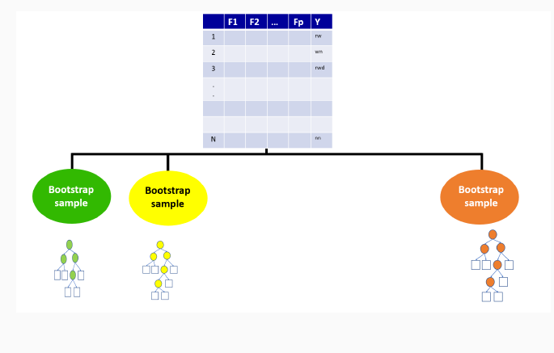
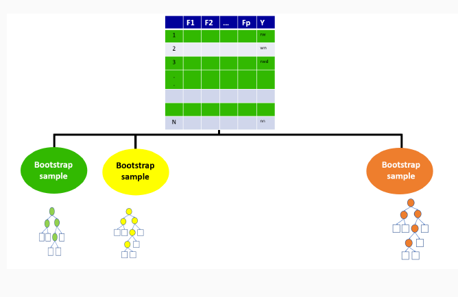
9.3.2 Out-of-bag sample for the first tree
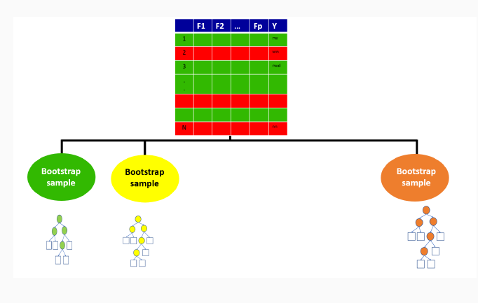
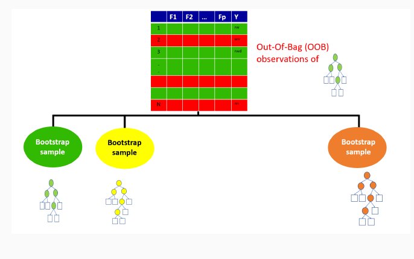
9.3.3 Out-of-bag sample predictions
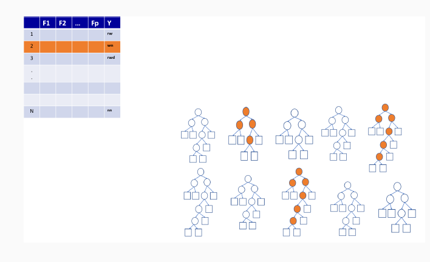
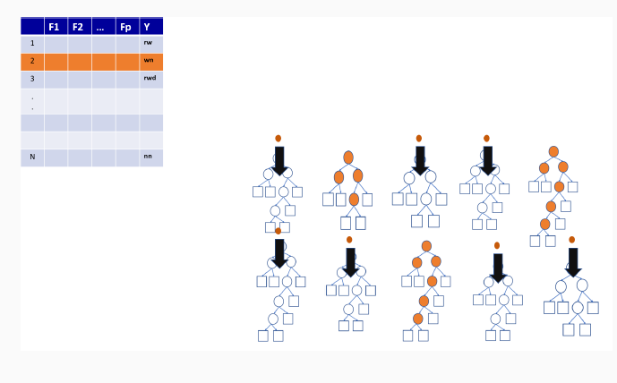
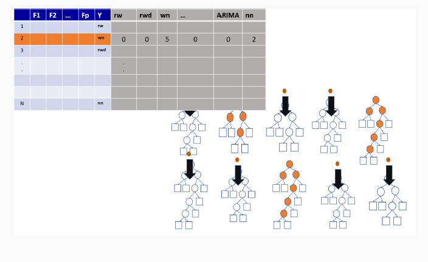
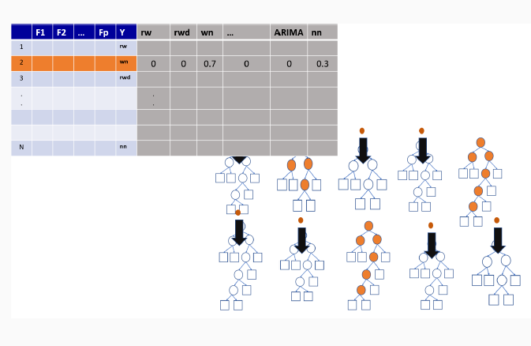
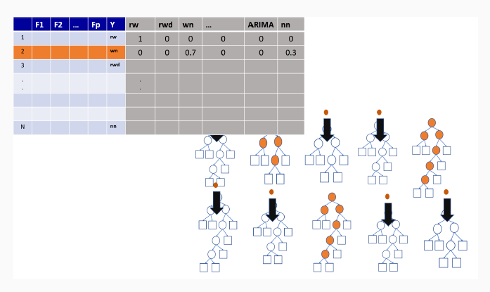
9.3.4 Variable importance measures in random forest
Permutation-based variable importance
Mean decrease in Gini coefficient
9.3.5 Random forest using R
set.seed(123)
library(randomForest)
rf <- randomForest(species ~ ., penguin_train)9.3.6 Make predictions and evaluate accuracy over the test set
penguin_test$predictrf <- predict(rf, penguin_test, type = "class")
confusionMatrix(data = penguin_test$predictrf,
reference = penguin_test$species)Confusion Matrix and Statistics
Reference
Prediction Adelie Chinstrap Gentoo
Adelie 37 0 0
Chinstrap 0 17 0
Gentoo 0 0 30
Overall Statistics
Accuracy : 1
95% CI : (0.957, 1)
No Information Rate : 0.4405
P-Value [Acc > NIR] : < 2.2e-16
Kappa : 1
Mcnemar's Test P-Value : NA
Statistics by Class:
Class: Adelie Class: Chinstrap Class: Gentoo
Sensitivity 1.0000 1.0000 1.0000
Specificity 1.0000 1.0000 1.0000
Pos Pred Value 1.0000 1.0000 1.0000
Neg Pred Value 1.0000 1.0000 1.0000
Prevalence 0.4405 0.2024 0.3571
Detection Rate 0.4405 0.2024 0.3571
Detection Prevalence 0.4405 0.2024 0.3571
Balanced Accuracy 1.0000 1.0000 1.00009.3.7 Receiver Operating Characteristic (ROC) curves
- Graphical plot that illustrates the performance of a binary classifier model.
9.3.8 When to Use an ROC Curve?
Binary Classification: It is particularly useful when you have two classes (e.g., yes/no, positive/negative).
Imbalanced Datasets: It’s beneficial for imbalanced classes since it doesn’t rely on accuracy, which can be biased when one class is significantly more frequent than the other.
Comparing Models: It’s a great tool for comparing multiple classifiers on the same dataset to see which performs better across thresholds.